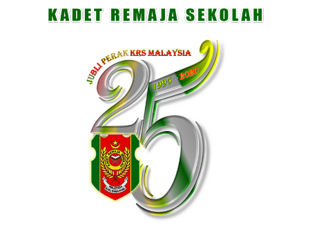
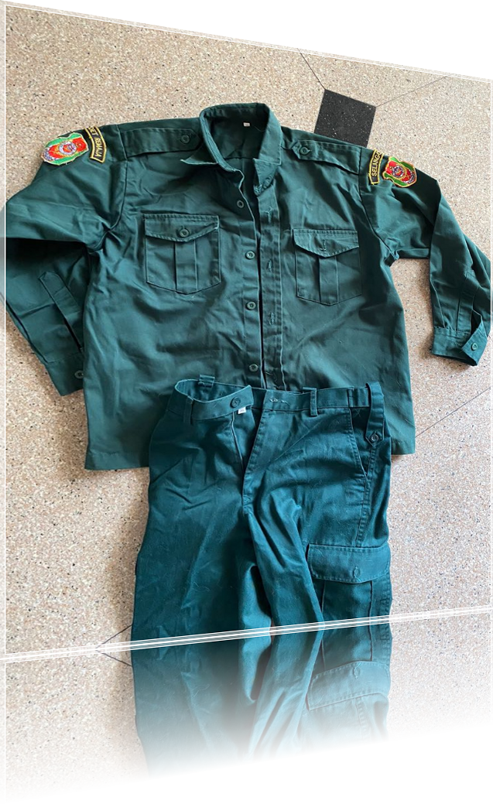
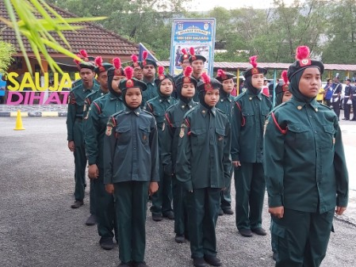

KADET REMAJA SEKOLAH
SMK SERI SAUJANA
Kadet Remaja Sekolah merupakan sebuah Pasukan Badan Beruniform yang ditubuhkan oleh KPM sebagai salah satu aktiviti kokurikulum di SMK Seri Saujana.
Pelaksanaan pasukan KRS sebagai salah satu elemen dalam aktiviti kokurikulum pasukan badan beruniform telah mewujudkan ruang kepada murid untuk mempraktikkan kemahiran ilmu pasukan badan beruniform dengan berteraskan konsep ILMU, IMAN DAN AMAL.
Penubuhan dan pelaksanaan pasukan KRS sejajar dengan hasrat yang terkandung dalam Falsafah Pendidikan Kebangsaan iaitu untuk melahirkan insan yang seimbang dari segi intelek, rohani, emosi dan jasmani di samping memberi fokus kepada kemenjadian murid.
KRS telah mewujudkan pelbagai peluang kepada murid untuk melibatkan diri dalam aktiviti KRS di pelbagai peringkat iaitu peringkat sekolah, daerah, negeri, kebangsaan dan antarabangsa.

Sejarah
Kadet Remaja Sekolajah (KRS) telah ditubuhkan dan diasaskan di Sekolah Menengah Raja Abdullah, Jalan Kepong, Kuala Lumpur pada 27 Jun 1987. Pasukan KPIM ini bernaung di bawah pengawasan Unit Pendidikan Islam Jabatan Pendidikan Wilayah Persekutuan. Usaha untuk menubuhkan KPIM secara rasmi dan bernaung di bawah Kementerian Pendidikan Malaysia telah dimulakan pada 10 Ogos 1993. Upacara Pelancaran Kadet Remaja Sekolah Peringkat Kebangsaan telah dilaksanakan pada 20 Jun 1995 bersamaan 21 Muharram 1416 oleh Yang Berhormat Dato' Seri Mohd Najib Tun Hj. Abdul Razak, Menteri Pendidikan Malaysia di Sekolah Menengah Raja Abdullah, Jalan Kepong, Kuala Lumpur.
Kadet Remaja Sekolah merupakan salah satu Pasukan Badan Beruniform yang paling awal diwujudkan di SMK Seri Saujana selepas penubuhannya pada tahun 2001. Penubuhannya adalah selaras dengan Surat Pekeliling Ikhtisas Bil. 4/1995: Pelaksanaan Kadet Remaja Sekolah (KRS). Pada tahun yang sama, pasukan KRS SMK Seri Saujana telah menghantar wakil ke Kursus Pemimpin di luar sekolah yang menumpukan aspek-aspek pelaksanaan aktiviti pasukan badan beruniform.
Jom Sertai
Kadet Remaja Sekolah

Uniform
Beret berwarna Sherwood Dark Green.
Baju kemeja lengan panjang Sherwood Dark Green.
Seluar panjang warna Sherwood Dark Green. (Ukuran kaki 40 cm - 46 cm)
Tali wisel merah.
Tali pinggang kanvas warna hijau berkepala emas dengan logo KRS.
Spike Boot.
Baju kemeja lengan panjang Sherwood Dark Green.
Seluar panjang warna Sherwood Dark Green. (Ukuran kaki 40 cm - 46 cm)
Tali wisel merah.
Tali pinggang kanvas warna hijau berkepala emas dengan logo KRS.
Spike Boot.
KRS ialah satu-satunya Badan Beruniform
di bawah naungan KPM

Kegiatan Aktiviti
Bahagian Sukan, Kokurikulum dan Kesenian, Kementerian Pendidikan Malaysia telah menyediakan Kurikulum KRS yang terbahagi kepada lima bahagian. Kurikulum yang paling utama ialah Disiplin dan Kerohanian yang bertujuan melahirkan generasi pelajar yang cintakan negara, mempunyai disiplin diri yang kental, berpegang teguh kepada ajaran agama serta sanggup berbakti kepada masyarakat yang memerlukan khidmat dan bimbingan.
Kurikulum yang seterusnya ialah Ketahanan Diri dan Kebudayaan yang bermatlamat melahirkan generasi pelajar yang sihat dari segi fizikal, mental, mempunyai daya tahan, berpotensi dan berketerampilan malah mampu menghindarkan diri dari gejala sosial yang buruk dengan menjadikan budaya timur sebagai tatacara hidup.
Kurikulum Khidmat Masyarakat (KHIDMAS) pula berpotensi melahirkan generasi pelajar yang sanggup berbakti, tolong-menolong dan berlumba-lumba membuat/melakukan amal kebajikan dalam kehidupan seharian tanpa mengira agama, kaum dan etnik.
Kurikulum Alam Sekitar disediakan untuk membina dan melahirkan generasi pelajar yang mencintai dan menghayati alam sekitar sehingga mampu menjadikan alam sekitar sebagai satu khazanah yang perlu dipelihara dan dikekalkan keasliannya untuk kepentingan manusia segajat.
Kurikulum yang terakhir sekali ialah Keusahawanan yang mampu memupuk minat di kalangan generasi pelajar agar dapat mengembangkan kreativiti masing-masing dan sikap berjimat cermat serta membenci amalan membazir, di samping membina asas kemahiran pemasaran perniagaan sehingga menjadikan keusahawanan sebagai budaya hidup.
Pencapaian
KRS SMK Seri Saujana telah menjadi Juara Perbarisan Temasya Hari Sukan pada tahun 2019. Pada tahun 2020, KRS juga mendapat tempat ketiga dalam pertandingan yang sama.
Kami pernah menghantar wakil ke beberapa Kursus Kenaikan Pangkat yang dianjurkan oleh Sekretariat KRS JPWPKL seperti Koperal, Sarjan, dan Pegawai Waran pada setiap tahun.
KRS juga pernah mewakili sekolah kami dalam Perkhemahan Pasukan Badan Beruniform Peringkat Antarabangsa seperti tahun 2020.